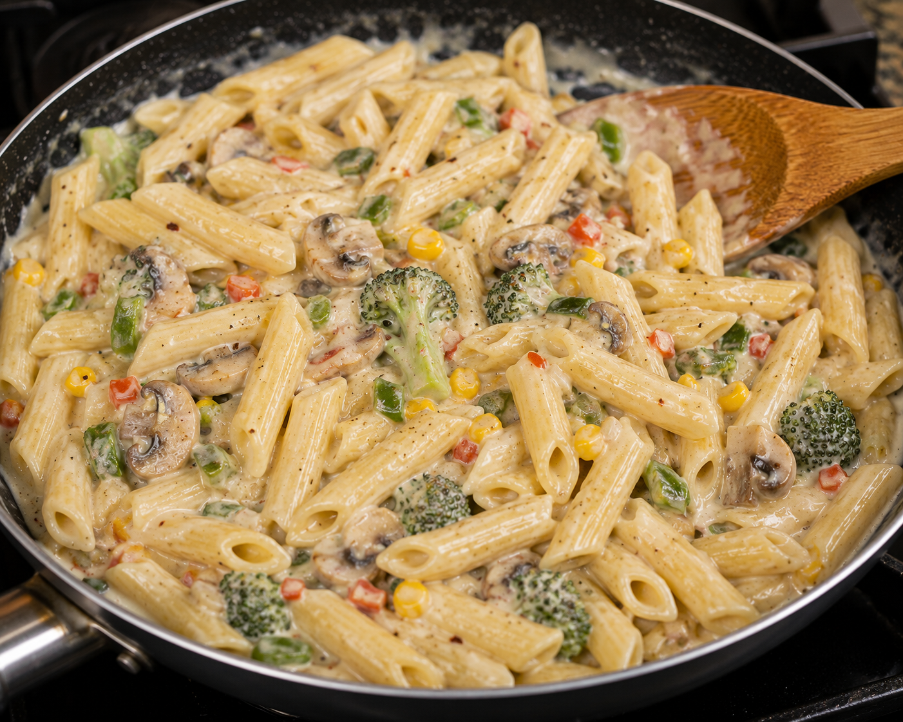

Steps to Follow:
- Add the cooked vegetables to the sauce
- Add the boiled pasta.
- Toss gently until every piece is coated
- Cook for 2 more minutes.
💡 Tips
- Don't overcook the pasta; it should be al dente (slightly firm).
- Stir the sauce continuously to prevent lumps.
- Add grilled chicken or paneer for extra protein.
- Freshly grated cheese melts better than pre-shredded cheese.
- If the sauce becomes too thick, add a splash of warm milk
🥗 Nutrition (Approximate Per Serving)
- Calories: 520 kcal
- Protein: 18 g
- Carbohydrates: 52 g
- Fat: 26 g
- Fiber: 4 g